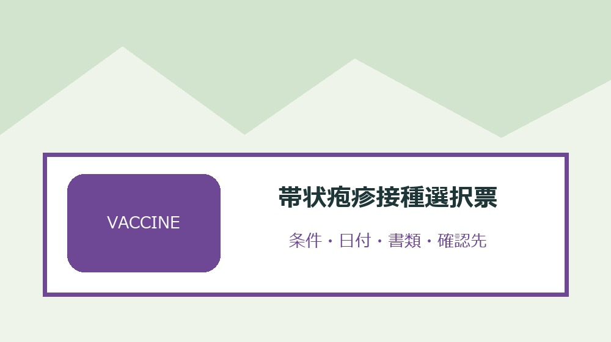
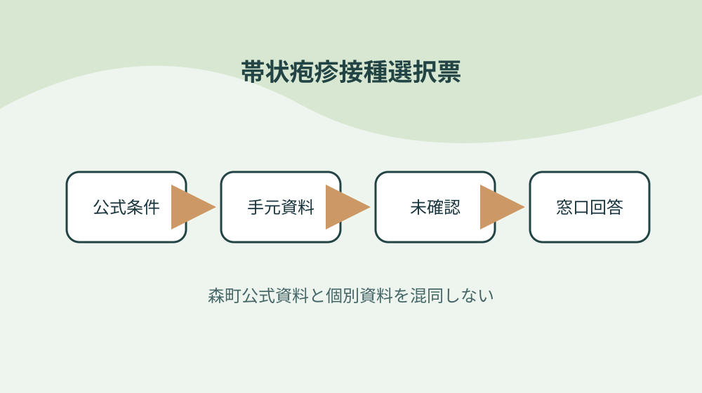
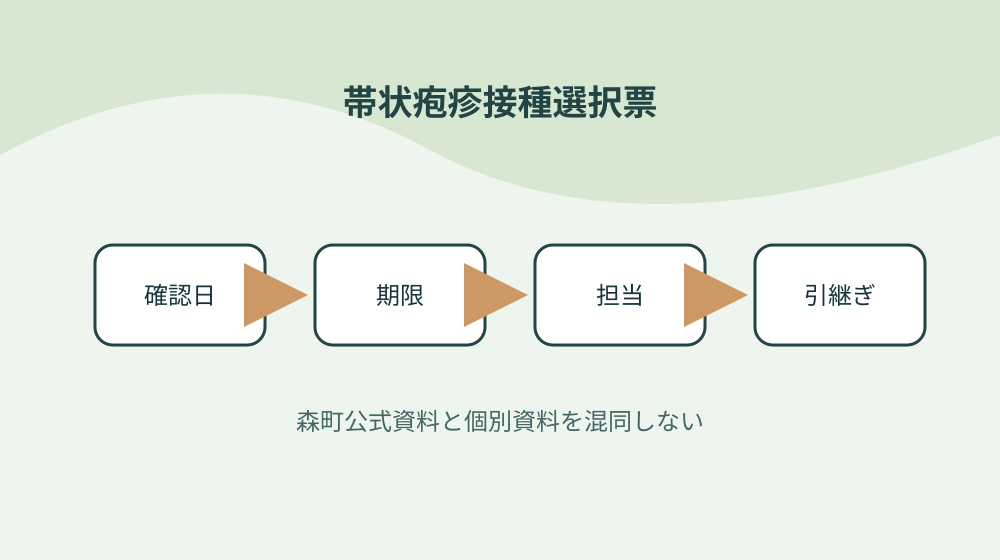

森町の令和8年度帯状疱疹ワクチンを対象年齢・種類・接種間隔で選ぶ

結論：今年度の生年月日区分を確認することから始め、予診票をワクチン別に申し込む条件と「森町は令和八年度の帯状疱疹定期接種費を一部助成する」の根拠を帯状疱疹接種選択票へ結びます。期限と次の確認先まで一行にすれば、森町の令和8年度帯状疱疹ワクチンを対象年齢・種類・接種間隔で選ぶ作業の取り違えを減らせます。
今年度の生年月日区分を確認する
森町公式資料で確認できる事実は「森町は令和八年度の帯状疱疹定期接種費を一部助成する」です。今年度の生年月日区分を確認するでは、この条件を帯状疱疹接種選択票の一行へ写し、対象者・対象物・確認日を同じ欄に置きます。制度名だけをメモせず、どの資料のどの条件を確認したかが家族や担当者にもたどれる形にしてください。
今年度の生年月日区分を確認するを確かめるときは、「対象は年度により異なる」という公式条件と、手元の通知・領収書・型番・日付を別列にします。必要資料が揃わなければ空欄を推測で埋めず、帯状疱疹接種選択票へ未確認の理由と次の照会先を記します。この表の役割は結論を急ぐことではなく、森町の令和8年度帯状疱疹ワクチンを対象年齢・種類・接種間隔で選ぶで起きる食い違いを安全に発見することです。
帯状疱疹接種選択票の作業日は、①「六十五歳到達者が対象区分にある」の掲載資料と更新日を見る、②今年度の生年月日区分を確認するの手元資料を照合する、③不足一点だけを窓口へ尋ねる、④回答日と担当を追記する順に進めます。共通条件だけで個別可否を断定せず、森町の令和8年度帯状疱疹ワクチンを対象年齢・種類・接種間隔で選ぶに関する最新の運用を実行前に確かめます。
帯状疱疹接種選択票を引き継ぐ欄には、「六十歳以上六十五歳未満には免疫機能障害の条件がある」の確認結果、次に行うこと、期限、原本の保管場所を書きます。今年度の生年月日区分を確認するを更新したら旧版を消さず、変更理由と回答した窓口を一行添えます。担当者が替わっても、その事実をどの資料で確かめたかまで戻れるため、同じ問い合わせや書類の取り直しを減らせます。
過去接種歴を本人に確認する
森町公式資料で確認できる事実は「六十五歳到達者が対象区分にある」です。過去接種歴を本人に確認するでは、この条件を帯状疱疹接種選択票の一行へ写し、対象者・対象物・確認日を同じ欄に置きます。制度名だけをメモせず、どの資料のどの条件を確認したかが家族や担当者にもたどれる形にしてください。
過去接種歴を本人に確認するを確かめるときは、「六十歳以上六十五歳未満には免疫機能障害の条件がある」という公式条件と、手元の通知・領収書・型番・日付を別列にします。必要資料が揃わなければ空欄を推測で埋めず、帯状疱疹接種選択票へ未確認の理由と次の照会先を記します。この表の役割は結論を急ぐことではなく、森町の令和8年度帯状疱疹ワクチンを対象年齢・種類・接種間隔で選ぶで起きる食い違いを安全に発見することです。
帯状疱疹接種選択票の作業日は、①「経過措置として七十歳から百歳までの五歳刻み対象がある」の掲載資料と更新日を見る、②過去接種歴を本人に確認するの手元資料を照合する、③不足一点だけを窓口へ尋ねる、④回答日と担当を追記する順に進めます。共通条件だけで個別可否を断定せず、森町の令和8年度帯状疱疹ワクチンを対象年齢・種類・接種間隔で選ぶに関する最新の運用を実行前に確かめます。
帯状疱疹接種選択票を引き継ぐ欄には、「対象者へ令和八年四月に個別案内を送付する」の確認結果、次に行うこと、期限、原本の保管場所を書きます。過去接種歴を本人に確認するを更新したら旧版を消さず、変更理由と回答した窓口を一行添えます。担当者が替わっても、その事実をどの資料で確かめたかまで戻れるため、同じ問い合わせや書類の取り直しを減らせます。
二種類の接種回数を比べる
森町公式資料で確認できる事実は「経過措置として七十歳から百歳までの五歳刻み対象がある」です。二種類の接種回数を比べるでは、この条件を帯状疱疹接種選択票の一行へ写し、対象者・対象物・確認日を同じ欄に置きます。制度名だけをメモせず、どの資料のどの条件を確認したかが家族や担当者にもたどれる形にしてください。
二種類の接種回数を比べるを確かめるときは、「対象者へ令和八年四月に個別案内を送付する」という公式条件と、手元の通知・領収書・型番・日付を別列にします。必要資料が揃わなければ空欄を推測で埋めず、帯状疱疹接種選択票へ未確認の理由と次の照会先を記します。この表の役割は結論を急ぐことではなく、森町の令和8年度帯状疱疹ワクチンを対象年齢・種類・接種間隔で選ぶで起きる食い違いを安全に発見することです。
帯状疱疹接種選択票の作業日は、①「過去に一回でも接種した人は対象外である」の掲載資料と更新日を見る、②二種類の接種回数を比べるの手元資料を照合する、③不足一点だけを窓口へ尋ねる、④回答日と担当を追記する順に進めます。共通条件だけで個別可否を断定せず、森町の令和8年度帯状疱疹ワクチンを対象年齢・種類・接種間隔で選ぶに関する最新の運用を実行前に確かめます。
帯状疱疹接種選択票を引き継ぐ欄には、「生ワクチンは一回接種である」の確認結果、次に行うこと、期限、原本の保管場所を書きます。二種類の接種回数を比べるを更新したら旧版を消さず、変更理由と回答した窓口を一行添えます。担当者が替わっても、その事実をどの資料で確かめたかまで戻れるため、同じ問い合わせや書類の取り直しを減らせます。
接種間隔を予定表へ入れる
森町公式資料で確認できる事実は「過去に一回でも接種した人は対象外である」です。接種間隔を予定表へ入れるでは、この条件を帯状疱疹接種選択票の一行へ写し、対象者・対象物・確認日を同じ欄に置きます。制度名だけをメモせず、どの資料のどの条件を確認したかが家族や担当者にもたどれる形にしてください。
接種間隔を予定表へ入れるを確かめるときは、「生ワクチンは一回接種である」という公式条件と、手元の通知・領収書・型番・日付を別列にします。必要資料が揃わなければ空欄を推測で埋めず、帯状疱疹接種選択票へ未確認の理由と次の照会先を記します。この表の役割は結論を急ぐことではなく、森町の令和8年度帯状疱疹ワクチンを対象年齢・種類・接種間隔で選ぶで起きる食い違いを安全に発見することです。
帯状疱疹接種選択票の作業日は、①「組換えワクチンは原則二回接種である」の掲載資料と更新日を見る、②接種間隔を予定表へ入れるの手元資料を照合する、③不足一点だけを窓口へ尋ねる、④回答日と担当を追記する順に進めます。共通条件だけで個別可否を断定せず、森町の令和8年度帯状疱疹ワクチンを対象年齢・種類・接種間隔で選ぶに関する最新の運用を実行前に確かめます。
帯状疱疹接種選択票を引き継ぐ欄には、「組換えワクチンは原則二から六か月の間隔を置く」の確認結果、次に行うこと、期限、原本の保管場所を書きます。接種間隔を予定表へ入れるを更新したら旧版を消さず、変更理由と回答した窓口を一行添えます。担当者が替わっても、その事実をどの資料で確かめたかまで戻れるため、同じ問い合わせや書類の取り直しを減らせます。

自己負担額を回数込みで見る
森町公式資料で確認できる事実は「組換えワクチンは原則二回接種である」です。自己負担額を回数込みで見るでは、この条件を帯状疱疹接種選択票の一行へ写し、対象者・対象物・確認日を同じ欄に置きます。制度名だけをメモせず、どの資料のどの条件を確認したかが家族や担当者にもたどれる形にしてください。
自己負担額を回数込みで見るを確かめるときは、「組換えワクチンは原則二から六か月の間隔を置く」という公式条件と、手元の通知・領収書・型番・日付を別列にします。必要資料が揃わなければ空欄を推測で埋めず、帯状疱疹接種選択票へ未確認の理由と次の照会先を記します。この表の役割は結論を急ぐことではなく、森町の令和8年度帯状疱疹ワクチンを対象年齢・種類・接種間隔で選ぶで起きる食い違いを安全に発見することです。
帯状疱疹接種選択票の作業日は、①「自己負担額はワクチン種類で異なる」の掲載資料と更新日を見る、②自己負担額を回数込みで見るの手元資料を照合する、③不足一点だけを窓口へ尋ねる、④回答日と担当を追記する順に進めます。共通条件だけで個別可否を断定せず、森町の令和8年度帯状疱疹ワクチンを対象年齢・種類・接種間隔で選ぶに関する最新の運用を実行前に確かめます。
帯状疱疹接種選択票を引き継ぐ欄には、「希望ワクチンを決めてから予診票を申し込む」の確認結果、次に行うこと、期限、原本の保管場所を書きます。自己負担額を回数込みで見るを更新したら旧版を消さず、変更理由と回答した窓口を一行添えます。担当者が替わっても、その事実をどの資料で確かめたかまで戻れるため、同じ問い合わせや書類の取り直しを減らせます。
持病と治療内容を医師へ伝える
森町公式資料で確認できる事実は「自己負担額はワクチン種類で異なる」です。持病と治療内容を医師へ伝えるでは、この条件を帯状疱疹接種選択票の一行へ写し、対象者・対象物・確認日を同じ欄に置きます。制度名だけをメモせず、どの資料のどの条件を確認したかが家族や担当者にもたどれる形にしてください。
持病と治療内容を医師へ伝えるを確かめるときは、「希望ワクチンを決めてから予診票を申し込む」という公式条件と、手元の通知・領収書・型番・日付を別列にします。必要資料が揃わなければ空欄を推測で埋めず、帯状疱疹接種選択票へ未確認の理由と次の照会先を記します。この表の役割は結論を急ぐことではなく、森町の令和8年度帯状疱疹ワクチンを対象年齢・種類・接種間隔で選ぶで起きる食い違いを安全に発見することです。
帯状疱疹接種選択票の作業日は、①「町指定医療機関へ事前予約する」の掲載資料と更新日を見る、②持病と治療内容を医師へ伝えるの手元資料を照合する、③不足一点だけを窓口へ尋ねる、④回答日と担当を追記する順に進めます。共通条件だけで個別可否を断定せず、森町の令和8年度帯状疱疹ワクチンを対象年齢・種類・接種間隔で選ぶに関する最新の運用を実行前に確かめます。
帯状疱疹接種選択票を引き継ぐ欄には、「町外の相互乗入れ医療機関では依頼書の事前申請が必要」の確認結果、次に行うこと、期限、原本の保管場所を書きます。持病と治療内容を医師へ伝えるを更新したら旧版を消さず、変更理由と回答した窓口を一行添えます。担当者が替わっても、その事実をどの資料で確かめたかまで戻れるため、同じ問い合わせや書類の取り直しを減らせます。
予診票をワクチン別に申し込む
森町公式資料で確認できる事実は「町指定医療機関へ事前予約する」です。予診票をワクチン別に申し込むでは、この条件を帯状疱疹接種選択票の一行へ写し、対象者・対象物・確認日を同じ欄に置きます。制度名だけをメモせず、どの資料のどの条件を確認したかが家族や担当者にもたどれる形にしてください。
予診票をワクチン別に申し込むを確かめるときは、「町外の相互乗入れ医療機関では依頼書の事前申請が必要」という公式条件と、手元の通知・領収書・型番・日付を別列にします。必要資料が揃わなければ空欄を推測で埋めず、帯状疱疹接種選択票へ未確認の理由と次の照会先を記します。この表の役割は結論を急ぐことではなく、森町の令和8年度帯状疱疹ワクチンを対象年齢・種類・接種間隔で選ぶで起きる食い違いを安全に発見することです。
帯状疱疹接種選択票の作業日は、①「森町は令和八年度の帯状疱疹定期接種費を一部助成する」の掲載資料と更新日を見る、②予診票をワクチン別に申し込むの手元資料を照合する、③不足一点だけを窓口へ尋ねる、④回答日と担当を追記する順に進めます。共通条件だけで個別可否を断定せず、森町の令和8年度帯状疱疹ワクチンを対象年齢・種類・接種間隔で選ぶに関する最新の運用を実行前に確かめます。
帯状疱疹接種選択票を引き継ぐ欄には、「対象は年度により異なる」の確認結果、次に行うこと、期限、原本の保管場所を書きます。予診票をワクチン別に申し込むを更新したら旧版を消さず、変更理由と回答した窓口を一行添えます。担当者が替わっても、その事実をどの資料で確かめたかまで戻れるため、同じ問い合わせや書類の取り直しを減らせます。
指定医療機関の取扱種類を聞く
森町公式資料で確認できる事実は「森町は令和八年度の帯状疱疹定期接種費を一部助成する」です。指定医療機関の取扱種類を聞くでは、この条件を帯状疱疹接種選択票の一行へ写し、対象者・対象物・確認日を同じ欄に置きます。制度名だけをメモせず、どの資料のどの条件を確認したかが家族や担当者にもたどれる形にしてください。
指定医療機関の取扱種類を聞くを確かめるときは、「対象は年度により異なる」という公式条件と、手元の通知・領収書・型番・日付を別列にします。必要資料が揃わなければ空欄を推測で埋めず、帯状疱疹接種選択票へ未確認の理由と次の照会先を記します。この表の役割は結論を急ぐことではなく、森町の令和8年度帯状疱疹ワクチンを対象年齢・種類・接種間隔で選ぶで起きる食い違いを安全に発見することです。
帯状疱疹接種選択票の作業日は、①「六十五歳到達者が対象区分にある」の掲載資料と更新日を見る、②指定医療機関の取扱種類を聞くの手元資料を照合する、③不足一点だけを窓口へ尋ねる、④回答日と担当を追記する順に進めます。共通条件だけで個別可否を断定せず、森町の令和8年度帯状疱疹ワクチンを対象年齢・種類・接種間隔で選ぶに関する最新の運用を実行前に確かめます。
帯状疱疹接種選択票を引き継ぐ欄には、「六十歳以上六十五歳未満には免疫機能障害の条件がある」の確認結果、次に行うこと、期限、原本の保管場所を書きます。指定医療機関の取扱種類を聞くを更新したら旧版を消さず、変更理由と回答した窓口を一行添えます。担当者が替わっても、その事実をどの資料で確かめたかまで戻れるため、同じ問い合わせや書類の取り直しを減らせます。
町外接種の依頼書を先に申請する
森町公式資料で確認できる事実は「六十五歳到達者が対象区分にある」です。町外接種の依頼書を先に申請するでは、この条件を帯状疱疹接種選択票の一行へ写し、対象者・対象物・確認日を同じ欄に置きます。制度名だけをメモせず、どの資料のどの条件を確認したかが家族や担当者にもたどれる形にしてください。
町外接種の依頼書を先に申請するを確かめるときは、「六十歳以上六十五歳未満には免疫機能障害の条件がある」という公式条件と、手元の通知・領収書・型番・日付を別列にします。必要資料が揃わなければ空欄を推測で埋めず、帯状疱疹接種選択票へ未確認の理由と次の照会先を記します。この表の役割は結論を急ぐことではなく、森町の令和8年度帯状疱疹ワクチンを対象年齢・種類・接種間隔で選ぶで起きる食い違いを安全に発見することです。
帯状疱疹接種選択票の作業日は、①「経過措置として七十歳から百歳までの五歳刻み対象がある」の掲載資料と更新日を見る、②町外接種の依頼書を先に申請するの手元資料を照合する、③不足一点だけを窓口へ尋ねる、④回答日と担当を追記する順に進めます。共通条件だけで個別可否を断定せず、森町の令和8年度帯状疱疹ワクチンを対象年齢・種類・接種間隔で選ぶに関する最新の運用を実行前に確かめます。
帯状疱疹接種選択票を引き継ぐ欄には、「対象者へ令和八年四月に個別案内を送付する」の確認結果、次に行うこと、期限、原本の保管場所を書きます。町外接種の依頼書を先に申請するを更新したら旧版を消さず、変更理由と回答した窓口を一行添えます。担当者が替わっても、その事実をどの資料で確かめたかまで戻れるため、同じ問い合わせや書類の取り直しを減らせます。

接種記録を次年度へ引き継ぐ
森町公式資料で確認できる事実は「経過措置として七十歳から百歳までの五歳刻み対象がある」です。接種記録を次年度へ引き継ぐでは、この条件を帯状疱疹接種選択票の一行へ写し、対象者・対象物・確認日を同じ欄に置きます。制度名だけをメモせず、どの資料のどの条件を確認したかが家族や担当者にもたどれる形にしてください。
接種記録を次年度へ引き継ぐを確かめるときは、「対象者へ令和八年四月に個別案内を送付する」という公式条件と、手元の通知・領収書・型番・日付を別列にします。必要資料が揃わなければ空欄を推測で埋めず、帯状疱疹接種選択票へ未確認の理由と次の照会先を記します。この表の役割は結論を急ぐことではなく、森町の令和8年度帯状疱疹ワクチンを対象年齢・種類・接種間隔で選ぶで起きる食い違いを安全に発見することです。
帯状疱疹接種選択票の作業日は、①「過去に一回でも接種した人は対象外である」の掲載資料と更新日を見る、②接種記録を次年度へ引き継ぐの手元資料を照合する、③不足一点だけを窓口へ尋ねる、④回答日と担当を追記する順に進めます。共通条件だけで個別可否を断定せず、森町の令和8年度帯状疱疹ワクチンを対象年齢・種類・接種間隔で選ぶに関する最新の運用を実行前に確かめます。
帯状疱疹接種選択票を引き継ぐ欄には、「生ワクチンは一回接種である」の確認結果、次に行うこと、期限、原本の保管場所を書きます。接種記録を次年度へ引き継ぐを更新したら旧版を消さず、変更理由と回答した窓口を一行添えます。担当者が替わっても、その事実をどの資料で確かめたかまで戻れるため、同じ問い合わせや書類の取り直しを減らせます。
良い点
森町公式資料で確認できる事実は「過去に一回でも接種した人は対象外である」です。良い点では、この条件を帯状疱疹接種選択票の一行へ写し、対象者・対象物・確認日を同じ欄に置きます。制度名だけをメモせず、どの資料のどの条件を確認したかが家族や担当者にもたどれる形にしてください。
良い点を確かめるときは、「生ワクチンは一回接種である」という公式条件と、手元の通知・領収書・型番・日付を別列にします。必要資料が揃わなければ空欄を推測で埋めず、帯状疱疹接種選択票へ未確認の理由と次の照会先を記します。この表の役割は結論を急ぐことではなく、森町の令和8年度帯状疱疹ワクチンを対象年齢・種類・接種間隔で選ぶで起きる食い違いを安全に発見することです。
帯状疱疹接種選択票の作業日は、①「組換えワクチンは原則二回接種である」の掲載資料と更新日を見る、②良い点の手元資料を照合する、③不足一点だけを窓口へ尋ねる、④回答日と担当を追記する順に進めます。共通条件だけで個別可否を断定せず、森町の令和8年度帯状疱疹ワクチンを対象年齢・種類・接種間隔で選ぶに関する最新の運用を実行前に確かめます。
帯状疱疹接種選択票を引き継ぐ欄には、「組換えワクチンは原則二から六か月の間隔を置く」の確認結果、次に行うこと、期限、原本の保管場所を書きます。良い点を更新したら旧版を消さず、変更理由と回答した窓口を一行添えます。担当者が替わっても、その事実をどの資料で確かめたかまで戻れるため、同じ問い合わせや書類の取り直しを減らせます。
注文したい点
森町公式資料で確認できる事実は「組換えワクチンは原則二回接種である」です。注文したい点では、この条件を帯状疱疹接種選択票の一行へ写し、対象者・対象物・確認日を同じ欄に置きます。制度名だけをメモせず、どの資料のどの条件を確認したかが家族や担当者にもたどれる形にしてください。
注文したい点を確かめるときは、「組換えワクチンは原則二から六か月の間隔を置く」という公式条件と、手元の通知・領収書・型番・日付を別列にします。必要資料が揃わなければ空欄を推測で埋めず、帯状疱疹接種選択票へ未確認の理由と次の照会先を記します。この表の役割は結論を急ぐことではなく、森町の令和8年度帯状疱疹ワクチンを対象年齢・種類・接種間隔で選ぶで起きる食い違いを安全に発見することです。
帯状疱疹接種選択票の作業日は、①「自己負担額はワクチン種類で異なる」の掲載資料と更新日を見る、②注文したい点の手元資料を照合する、③不足一点だけを窓口へ尋ねる、④回答日と担当を追記する順に進めます。共通条件だけで個別可否を断定せず、森町の令和8年度帯状疱疹ワクチンを対象年齢・種類・接種間隔で選ぶに関する最新の運用を実行前に確かめます。
帯状疱疹接種選択票を引き継ぐ欄には、「希望ワクチンを決めてから予診票を申し込む」の確認結果、次に行うこと、期限、原本の保管場所を書きます。注文したい点を更新したら旧版を消さず、変更理由と回答した窓口を一行添えます。担当者が替わっても、その事実をどの資料で確かめたかまで戻れるため、同じ問い合わせや書類の取り直しを減らせます。
対案・結論
帯状疱疹接種選択票は、全項目を一度で完成させるより、「今年度の生年月日区分を確認する」から確定する方が実用的です。公式条件、手元資料、窓口回答を別欄にし、対象は年度により異なるという事実と個別事情の食い違いを消さずに残してください。
予診票をワクチン別に申し込むに費用や契約が伴う場合は、対象・期限・事前手続を再確認してから進めます。森町の共通案内だけで個別案件を断定せず、過去に一回でも接種した人は対象外であるという確認済み情報と手元資料を示して尋ねます。
結論は、接種記録を次年度へ引き継ぐまでを今日の一行にし、次の確認日を決めることです。帯状疱疹接種選択票があれば、森町の令和8年度帯状疱疹ワクチンを対象年齢・種類・接種間隔で選ぶの作業を家族や社内担当が同じ根拠から続けられます。
町外の相互乗入れ医療機関では依頼書の事前申請が必要という条件が更新された場合は旧版を削除せず、変更日と採用理由を記します。帯状疱疹接種選択票に履歴が残れば、古い書類や判断を使った理由も後から説明できます。
大石の視点
ここまでの「森町は令和八年度の帯状疱疹定期接種費を一部助成する」などの制度条件は森町公式資料で確認できる事実です。以下は、私、大石浩之が帯状疱疹接種選択票を運用するためにすすめる方法であり、森町や関係機関の公式見解ではありません。
私は帯状疱疹接種選択票を紙一枚から始め、過去接種歴を本人に確認するの原本を動かさず、写しや写真へ番号を付ける方法を勧めます。森町の令和8年度帯状疱疹ワクチンを対象年齢・種類・接種間隔で選ぶの確認で原本を持ち歩く回数を減らせるからです。
指定医療機関の取扱種類を聞くに未確認欄が残っても失敗扱いしません。確認先と期限が書かれた未確認欄は、生ワクチンは一回接種であるを根拠なく個別案件へ当てはめるより価値があります。
最後に、帯状疱疹接種選択票に含む個人情報や事業情報は共有範囲を決めます。接種記録を次年度へ引き継ぐための内部版と外部提出版を同じファイルにせず、必要部分だけを渡せる構成にしてください。
よくある質問
帯状疱疹接種選択票で最初に確認することは何ですか。
対象者・対象物、基準日、手元資料、森町公式の条件を一行にします。森町は令和八年度の帯状疱疹定期接種費を一部助成するという共通条件を起点にしつつ、個別の可否は資料と窓口回答で確定します。
資料が足りないまま帯状疱疹接種選択票を作れますか。
作れます。二種類の接種回数を比べるに不足があれば未確認と記し、必要資料、確認先、確認期限を残します。推測で埋めないことが、帯状疱疹接種選択票から安全に作業を再開する条件です。
森町公式ページを保存すれば再確認は不要ですか。
町外の相互乗入れ医療機関では依頼書の事前申請が必要などの条件は変わることがあります。帯状疱疹接種選択票へURL、ページ名、確認日を残し、予診票をワクチン別に申し込むを実行する直前に現行案内を再確認してください。
帯状疱疹接種選択票を家族や担当者へ渡すとき何を添えますか。
接種記録を次年度へ引き継ぐため、確認済み事実、未確認事項、期限、次の担当、原本の保管場所、町へ尋ねた日と回答を添えます。帯状疱疹接種選択票に含む個人情報は渡す相手と保管方法を限定します。
公式情報源
- 令和8年度帯状疱疹ワクチン（2026年8月19日確認）
- 森町帯状疱疹ワクチン定期接種医療機関（2026年8月19日確認）
最終確認日：2026-08-19 ／ 公表事実と執筆者の解釈・意見を分けて記載しています。